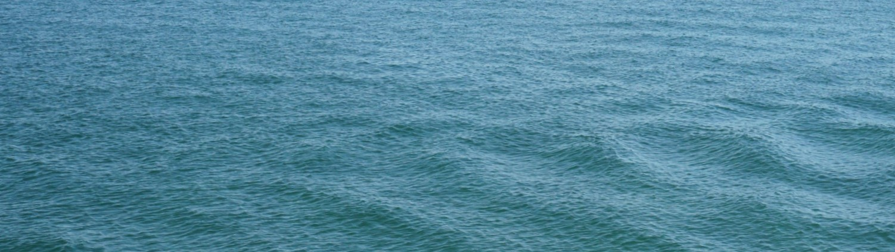

by David
Hello, that’s me, David (left, pre-CoVid, pre-facial hair). My life's calling is eating food and drinking coffee. Besides eating and drinking, I also study at George Brown College in the Interaction Design program and was a part-time barista. However, now that I can no longer make coffee at work or go out to buy one, or six coffees from my favourite cafes, my kitchen has been converted into a pop-up coffee shop. Besides coffee, my interests include:
Around this time last year I went on my first international trip and decided on Japan (second photo). After that trip, I decided I wanted to travel at least once a year. Unfortunately, due to a worldwide crisis, I don’t think that will be possible to do this year. Nonetheless, I already made my list of top three places I want to visit once it is safe to do so! Organised from country I would most like to visit first, they are:
As for now, I have been deemed unessential, so I am doing my part by staying indoors. As difficult as it was when it first started, I have become comfortable in quarantine while I cook and bake all the time away. To tune into what I’ve been making, follow my Instagram!